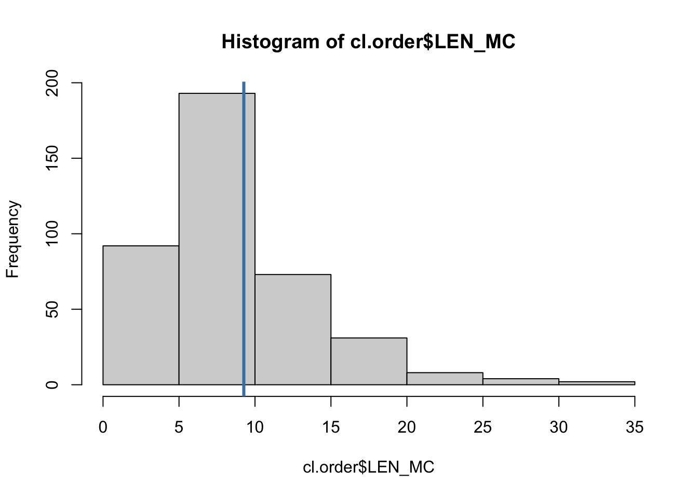
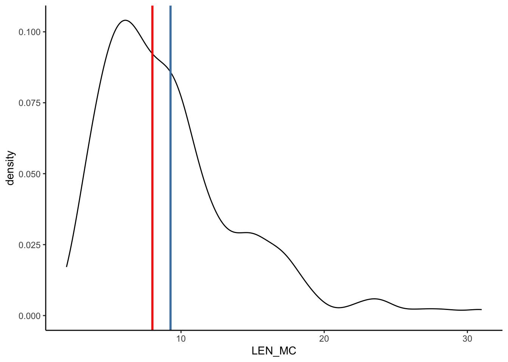
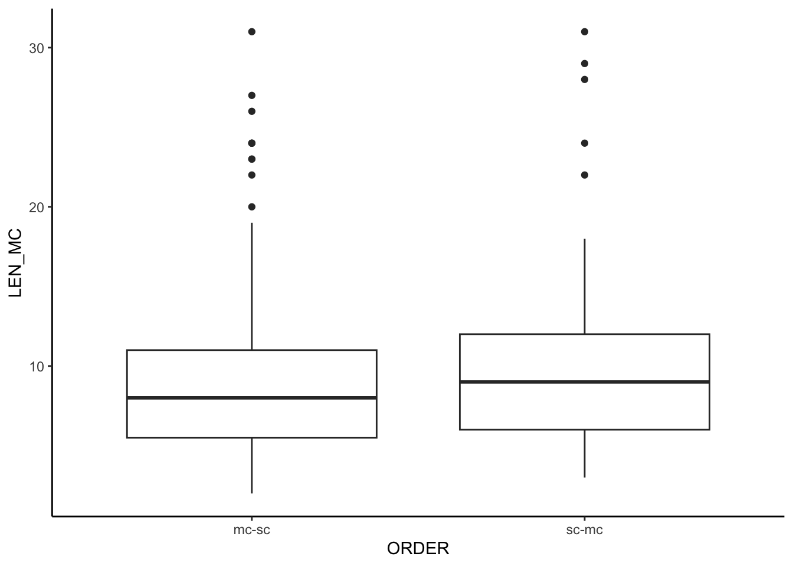

# Using mean()
mean(cl.order$LEN_MC)[1] 9.265509# or by hand:
mean <- 1/length(cl.order$LEN_MC) * sum(cl.order$LEN_MC)A useful summary statistic is the arithmetic mean \(\bar{x}\) (cf. Heumann, Schomaker, and Shalabh 2022: 38). Consider a variable \(X\) with observations \(x_1, x_2, ..., x_n\) from a sample of size \(n\). The sample mean then corresponds to
\[ \bar{x}= \frac{x_1 + x_2 + ... + x_n}{n} \\ = \frac{1}{n}\sum_{i=1}^n{x_i}. \]
In R, we can obtain the average value of a numeric vector with the mean() function.
# Using mean()
mean(cl.order$LEN_MC)[1] 9.265509# or by hand:
mean <- 1/length(cl.order$LEN_MC) * sum(cl.order$LEN_MC)Visualisation:
# Plot distribution of LEN_MC
cl.length.hist <- ggplot(cl.order, aes(x = LEN_MC)) +
geom_histogram(binwidth = 2)
cl.length.hist +
# Add mean
geom_vline(aes(xintercept = mean(LEN_MC)),
color = "steelblue",
linewidth = 1) +
theme_classic()
# Plot distribution of LEN_MC
cl.length.dens <- ggplot(cl.order, aes(x = LEN_MC)) +
geom_density()
cl.length.dens +
# Add mean
geom_vline(aes(xintercept = mean(LEN_MC)),
color = "steelblue",
linewidth = 1) +
theme_classic()median() function computes the “the halfway point of the data (50% of the data are above the median; 50% of the data are below” (Winter 2020: 58)\[ \tilde{x}_{0.5} = \begin{cases} x_{((n+1)/2)} & \text{if } n \text{ is odd.} \\ \frac{1}{2}(x_{n/2}+x_{(n/2+1)}) & \text{if } n \text{ is even.} \end{cases} \]
# Using median()
median(cl.order$LEN_MC)[1] 8# or by hand:
sample_sorted <- sort(cl.order$LEN_MC) # sort values in ascending order
n <- length(cl.order$LEN_MC) # sample size is 403 (odd number!)
median <- sample_sorted[(n + 1) %/% 2] # compute medianVisualisation:
cl.length.hist +
# Add mean
geom_vline(aes(xintercept = mean(LEN_MC)), color = "steelblue", linewidth = 1) +
# Add median
geom_vline(aes(xintercept = median(LEN_MC)), color = "red", linewidth = 1) +
theme_classic()
cl.length.dens +
# Add mean
geom_vline(aes(xintercept = mean(LEN_MC)), color = "steelblue", linewidth = 1) +
# Add median
geom_vline(aes(xintercept = median(LEN_MC)), color = "red", linewidth = 1) +
theme_classic()
In order to assess how well the mean represents the data, it is instructive to compute the variance var() and the standard deviation sd() for a sample.
The sample variance is defined as
\[s^2 = \frac{1}{n}\sum_{i=1}^n{(x_i - \bar{x})^2}. \]
# Using var()
var(cl.order$LEN_MC)[1] 25.12585# or by hand:
sample_data <- cl.order$LEN_MC
# Calculate the sample standard deviation
var <- 1 / length(sample_data) * sum((sample_data - mean(sample_data))^2) # formula above
# Note that R's var() function applies an additional bias correction measure:
var_corrected <- 1 / (length(sample_data) - 1) * sum((sample_data - mean(sample_data))^2) # equivalent to var()\[ s = \sqrt{\frac{1}{n}\sum_{i=1}^n{(x_i - \bar{x})^2}} \]
# Using sd()
sd(cl.order$LEN_MC)[1] 5.012569# or by hand:
sample_data <- cl.order$LEN_MC
# Calculate the sample standard deviation
sd <- sqrt(1 / (length(sample_data) - 1)* sum((sample_data - mean(sample_data))^2))Application and visualisation:
cl.length.hist +
# Add verticle line for the mean
geom_vline(aes(xintercept = mean(LEN_MC)), color = "steelblue", linewidth = 1) +
# Add -1sd
geom_vline(aes(xintercept = mean(LEN_MC) - sd(LEN_MC)), color = "orange", linewidth = 1) +
# Add +1sd
geom_vline(aes(xintercept = mean(LEN_MC) + sd(LEN_MC)), color = "orange", linewidth = 1) +
theme_classic()# Create data frame with mean and sd for each clause ORDER
cl.order %>%
# Select variables of interest
select(ORDER, LEN_MC) %>%
# Group results of following operations by ORDER
group_by(ORDER) %>%
# Create grouped summary of mean and sd for each ORDER
summarise(mean = mean(LEN_MC),
sd = sd(LEN_MC)) -> cl_mean_sd; cl_mean_sd# A tibble: 2 × 3
ORDER mean sd
<chr> <dbl> <dbl>
1 mc-sc 9.04 4.91
2 sc-mc 9.75 5.22# Plot results
ggplot(cl_mean_sd, aes(x = ORDER, y = mean)) +
# Barplot with a specific variable mapped onto y-axis
geom_col() +
# Add mean and standard deviation to the plot
geom_errorbar(aes(x = ORDER,
ymin = mean-sd,
ymax = mean+sd), width = .2) +
theme_classic() +
labs(y = "Mean length of main clauses", x = "Clause order")
While median() divides the data into two equal sets (i.e., two 50% quantiles), the quantile() function makes it possible to partition the data further.
quantile(cl.order$LEN_MC) 0% 25% 50% 75% 100%
2 6 8 11 31 quantile(x, 0) and quantile(x, 1) thus show the minimum and maximum values, respectively.
quantile(cl.order$LEN_MC, 0)0%
2 quantile(cl.order$LEN_MC, 1)100%
31 ggplot(cl.order, aes(x = ORDER, y = LEN_MC)) +
geom_boxplot() +
theme_classic()
ggplot(cl.order, aes(x = ORDER, y = LEN_MC)) +
geom_boxplot() +
geom_jitter() + # add data points
theme_classic()
ggplot(cl.order, aes(x = LEN_MC, fill = ORDER)) +
geom_density(alpha = 0.5) +
coord_flip() +
theme_classic()
geom_boxplot()ggplot(cl.order, aes(x = ORDER, y = LEN_MC)) +
geom_boxplot()
color and/or fillggplot(cl.order, aes(x = LEN_MC, fill = ORDER)) +
geom_density(alpha = 0.5)
geom_col()ggplot(cl.order, aes(x = ORDER, y = LEN_MC)) +
geom_col(aes(x = ORDER, y = LEN_MC))
LEN_MC (x), LEN_SC (y), ORDER (colour) and SUBORDTYPE (shape)# 4 variables
ggplot(cl.order, aes(x = LEN_MC, y = LEN_SC)) +
geom_point(aes(color = ORDER, shape = SUBORDTYPE))
# 5 variables
ggplot(cl.order, aes(x = LEN_MC, y = LEN_SC)) +
geom_point(aes(color = ORDER, shape = SUBORDTYPE)) +
facet_wrap(~MORETHAN2CL)